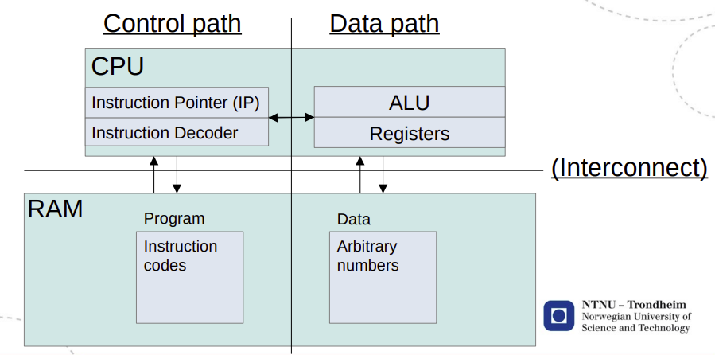

TDT4200 - Parallelle beregninger
01 Introduction
The main focus is on programming models:
- Message Passing Interface (MPI)
- Posix threads (pthreads)
- Open Multi-Processing (OpenMP)
- Compute Unified Device Architecture (CUDA)
Hardware went parallel around the turn of the century, and continues to pile on the resources. Software hasn’t really kept up, making code run better with extra processors is an “advanced topic”. Figuring out how to present parallel computing for the masses is very much a work-in-progress.
02 The von Neumann computer

The strength of Neumann
The von Neumann computer is a bridging model:
- Programmers can improve performance for every computer
- Hardware designers can improve performance for every program
The weakness(es) of Neumann
- Programs become strings of read-modify-write cycles
- This means that the program will run at the speed of memory access whenever it needs to load new data
- This constraint is known as the von Neumann bottleneck
- Sequential programs can only finish as quickly as the sum of their operations
- It gives all available memory to every program, and makes no distinction between frequently used and entirely idle addresses
The bridging model for parallel computing
We don’t have one. It has been a work in progress for decades.
We write programs in the von Neumann style, and try detect the parts that can be done in parallel. We will discuss explicit ways to run
- Multiple collaborating processes (distributed memory)
- Multiple instruction streams in one process (shared memory)
- Multiple operations in one instruction (vector operations)
- Multiple processor types in one program (hybrid programming)
03 Caches and virtual memory
Temporal locality and spatial locality
Memory: capacity vs. speed vs. cost
Fully associative and set-associative caches
Virtual memory and paging
04 Instruction-level parallelism
Pipelining
Out-of-order execution
Bernstein’s conditions define that statements , are independent (i.e. will produce the same result when run in any order) if
- (S1 doesn’t read what S2 writes)
- (S1 doesn’t write what S2 reads)
- (S1 and S2 don’t write in the same place)
We have three types of dependencies:
- Data dependence: when the result of one operation is an input to a following operation
- Name dependence: when a name is re-used for a different purpose
- Control dependence: branches in the program
Superscalar processors: With automatic (in)dependence detection in place, we can replicate the ALU parts of the Neumann machine and make the control path dispatch several instructions at once. This is fondly known as multiple issue in computer architecture.
Prefetching & branch prediction
Many loops create regular access patterns in memory. By default, that kind of loop will regularly create cache misses at the end of every cache line. Upcoming misses can be avoided by detecting the pattern and starting the memory transfer early.
When pre-loading instructions, if() statements, loop tails, etc. make it hard to decide which branch to pre-load. Wrong guesses require the pipeline to be flushed. It is possible to store branch statistics next to a table of the branch instructions’ addresses in the code.
Vectorization
Vector registers are extra-wide registers that can store several consecutive values at once. With the vector registers loaded, there are instructions that do the same thing to all of their elements in parallel. Packing data into wide registers like this, we can do 4 times the work in one of the read-modify-write cycles of Neumann